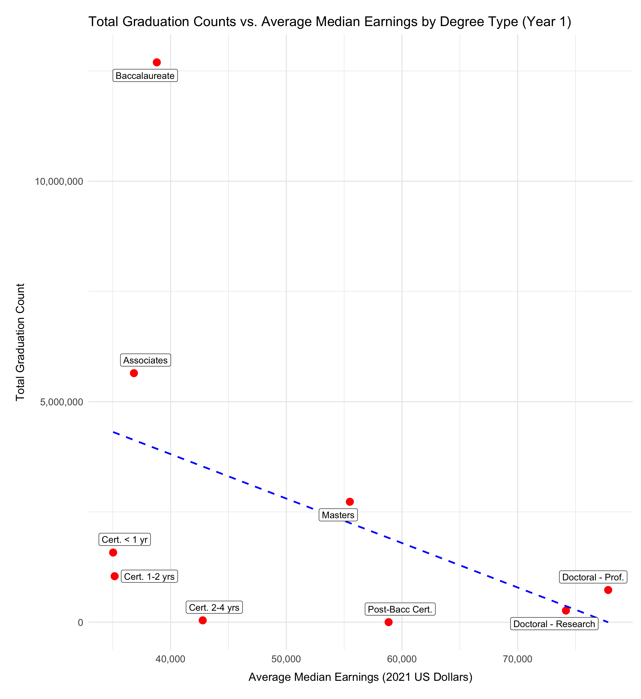
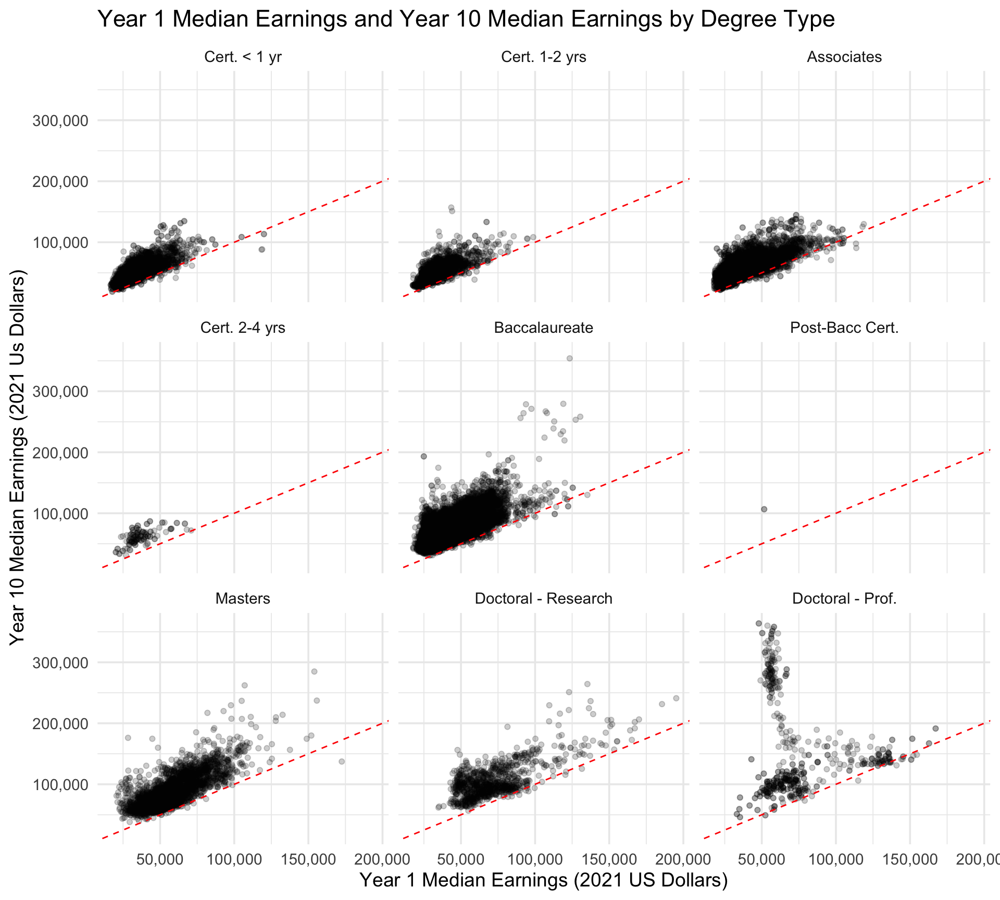
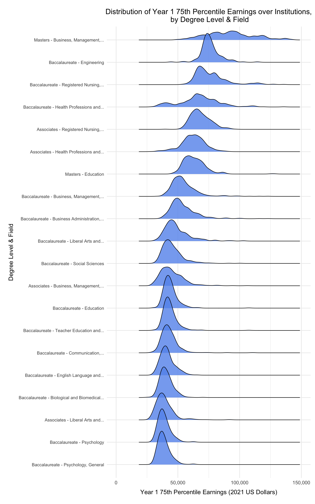
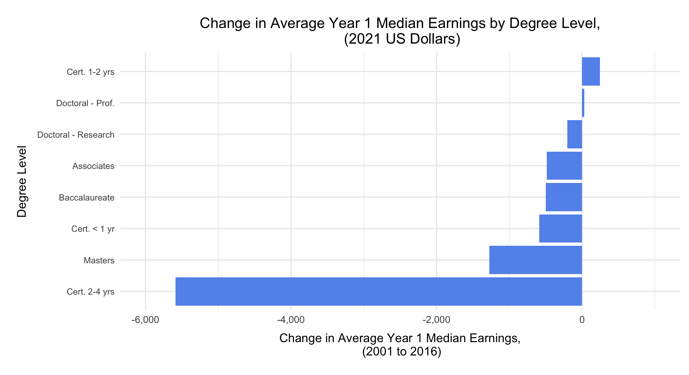

3.1 What are the top-earning fields of study within each degree type and their growth potential?
This analysis explores the earnings potential of various fields of study within the top-earning fields by degree type, highlighting trends across early, mid, and long-term career stages (Year 1, Year 5, Year 10). We aim to identify areas that consistently offer higher financial returns, or considerable growth, and understand how various degree types influence earning trajectories. Intuition tells us that more advanced degrees could yield better outcomes, but field-specific patterns could help influence a prospective college student’s choice of major.
Code
top_n <-5plot_df <-pseoe |>group_by(degree_level, degree_label, cipcode_label) |>summarize(median_y1_earnings =mean(y1_p50_earnings, na.rm =TRUE),median_y5_earnings =mean(y5_p50_earnings, na.rm =TRUE),median_y10_earnings=mean(y10_p50_earnings, na.rm =TRUE),.groups="drop" ) |>filter(!is.na(median_y1_earnings) |!is.na(median_y5_earnings)|!is.na(median_y10_earnings) ) |>arrange(degree_level, desc(median_y10_earnings)) |>group_by(degree_label) |>slice_head(n =top_n) |>mutate(cipcode_label=reorder_within( cipcode_label,-median_y10_earnings, degree_label ) ) |>pivot_longer(cols =starts_with("median"), names_to="year", values_to ="median_earnings" ) |>mutate(year=factor( year, levels=c("median_y1_earnings","median_y5_earnings", "median_y10_earnings" ),labels=c("Year 1", "Year 5", "Year 10") ),degree_label =factor( degree_label, levels=unique(degree_label[order(degree_level)]) ) )suppressWarnings(ggplot(plot_df, aes(x= cipcode_label, y=median_earnings, fill =year)) +geom_bar(stat ="identity", position="dodge",na.rm =TRUE) +facet_wrap(~degree_label, scales="free_x", nrow =2, drop =TRUE) +scale_x_reordered() +scale_y_continuous(labels = scales::label_number(big.mark =",", decimal.mark =".")) +theme_minimal(base_size =14) +labs(title =paste("Top", top_n, "Average Median Earnings by Field of Study and Degree Type") ,x="Field of Study",y="Average Median Earnings (2021 US Dollars)",fill ="Earnings Year" ) +theme(axis.text.x =element_text(angle =55, hjust =1, size=10),axis.title.y=element_text(margin =margin(r =10)),strip.text =element_text(size =12, face ="bold", margin =margin(b=5)),panel.grid.major.x=element_blank(),plot.margin =margin(t =20, r=10, b =20, l =20),legend.position="top", legend.direction="horizontal" ))
The plot displays the top 5 earning fields of study for each degree type. While the general intuition that higher degrees yield higher income holds true, there are notable exceptions.
Certificates, for instance, often result in lower income compared to associate or bachelor’s degrees for the upper echelon earnings. This could be because many pursuing certificates are transitioning into new fields, starting at entry-level positions in their new career paths.
Certain fields stand out for disproportionately high earnings at advanced degree levels. For example, graduates with Health Profession Master’s degrees often earn more in Year 1 than most Doctoral - Research graduates make even 10 years post-graduation. This might reflect the immediate applicability and demand for healthcare expertise, like possibly nursing.
Furthermore, fields related to science and technology consistently dominate top-earning outcomes across all degree levels. This likely reflects the consistent demand and high value placed on specialized technical and analytical skills in the labor market. However, healthcare professionals appear to significantly increase their earning potential with advanced degrees, while engineering fields tend to show steady earning growth across all degree levels.
3.2 How do earnings compare across states and career progression?
For many students, location plays a crucial role in choosing a college. Some deliberately select schools in a different state from where they grew up to gain new experiences. While they may not plan to settle in the state where they attend college, it’s worth considering the earning potential in that state - particularly when evaluating opportunities for internships or entry-level positions after graduation.
Warning: Removed 4 rows containing missing values or values outside the scale range
(`geom_point()`).
This plot shows income outcomes by state, validating the intuition that more experience generally leads to higher earnings across all states.
However, income levels vary significantly between states. For instance, Rhode Island’s average median income one year after graduation rivals South Dakota’s ten-year figure, highlighting disparities likely driven by the dominant industries in each state. States with higher-paying industries, like finance or technology, tend to have higher earnings, while rural or agriculture-focused states remain lower.
Notably, a large population state like New York shows a relatively low average median income in Year 1 but a significantly higher value by Year 10. This may reflect the variability and range of salaries in the state, driven by its diverse opportunities and the large population accessing them.
3.3 Is there a correlation between Year 1 income outcomes and employment counts by degree level?
Similar to location, immediate earnings outcomes are a key consideration for many students. The question arises from this - are students more likely to choose degree paths that lead to higher initial (Year 1) earnings? If that’s the case, we would expect to see a correlation between Year 1 earnings outcomes and the number of students pursuing those higher paying degree types.
Code
plot_df <- pseoe |>group_by(degree_level, degree_label) |>summarize(avg_median_y1_earnings =mean(y1_p50_earnings, na.rm =TRUE),total_employment =sum(y1_grads_earn, na.rm =TRUE),.groups ="drop" ) |>filter(!is.na(avg_median_y1_earnings), total_employment >0 ) |>arrange(degree_level)suppressWarnings(ggplot(plot_df, aes(y = total_employment, x = avg_median_y1_earnings)) +geom_point(size =4, color ="red") +geom_label_repel(aes(label = degree_label), size =4, max.overlaps =Inf, box.padding =0.5, point.padding =0.5, segment.color ="grey50") +theme_minimal(base_size =14) +scale_x_continuous(labels = scales::label_number(big.mark =",", decimal.mark =".")) +scale_y_continuous(labels = scales::label_number(big.mark =",", decimal.mark =".")) +labs(title ="Employment Counts vs. Average Median Earnings by Degree Type (Year 1)",y ="Total Employment Count",x ="Average Median Earnings (2021 US Dollars)" ) +theme(axis.text.x =element_text(size =12),axis.text.y =element_text(size =12),axis.title.x =element_text(size =14, margin =margin(t =10)),axis.title.y =element_text(size =14, margin =margin(r =10)),plot.margin =margin(t =20, r =10, b =20, l =20) ))

This plot shows Year 1 average median earnings against total Year 1 employment counts. While one might assume that higher degree levels - and their associated higher income - would attract more graduates, the data shows no clear correlation. High-paying degrees like Doctoral - Prof. and Doctoral - Research have relatively low employment counts, while degrees like Baccalaureate and Associates have much higher counts despite lower incomes.
Certificate programs (<1 year and 1-2 years) cluster at the low end for both earnings and employment, reinforcing their role as niche credentials, potentially for those who are looking to switch careers as stated earlier.
Masters degrees seem to balance moderate incomes and employment by occupying the middle ground. Overall, this plot clearly suggests that factors beyond immediate income, such as accessibility, cost, and career pathways, may heavily influence degree level choices.
3.4 How does the total number of graduates compare to employed graduates by degree level, one year from graduation?
To further explore the significance of degree level in shaping outcomes, we’ll examine the gap between total employed graduates and total overall graduates, broken down by degree level one year after graduation. Ideally, in a stable job market with consistent demand across all degree levels, these gaps would be relatively small, representing the portion of graduates successfully employed. However, larger gaps could indicate areas where supply exceeds demand or where degree-specific factors, like the level of specialization, impact employment outcomes. This analysis can help highlight which degree levels align more closely with immediate job market opportunities and where students might face greater challenges in securing employment shortly after their graduation.
This plot shows the difference between total graduates and those employed one year after graduation. Niche degrees, such as certificates and doctoral degrees, show higher employment rates, with relatively small gaps between graduates and employed individuals. In contrast, more general degrees like Associates, Baccalaureate, and Masters show noticeable gaps, indicating that a significant portion of graduates remain unemployed.
This discrepancy could be due to the broader applicability and generality of these degrees, which may lead to greater variability in employment outcomes. Additionally, the larger graduate populations for these degrees might create more competition in the job market, further contributing to the gaps. Also, the relatively small graduate numbers in niche fields may align better with job market demand, which would result in the higher observed employment rates.
3.5 How do employment outcomes and growth compare across the most popular fields?
For students exploring various fields of study and weighing their long-term growth potential, comparing employment outcomes across fields is essential. Normalizing the data allows us to make these comparisons more meaningful by putting different metrics, like employment rates and earnings, on the same scale. This way, we can evaluate how fields stack up relative to one another, regardless of the raw differences in magnitude, such as the sheer number of graduates or absolute income levels. Visualizing this can highlight trends and relationships that might otherwise be obscured, providing students with a clearer picture to guide their decisions.
This plot provides an analysis of employment outcomes, including normalized employment rates and income trajectories, for the most popular fields of study (by graduate volume).
Fields like Homeland Security, Business Management, and Registered Nursing show high employment rates, which make them attractive for those seeking immediate job security. However, their normalized median incomes decline over time relative to other fields, suggesting potential income stagnation for graduates in these areas.
Fields like Biological and Biomedical Engineering start with lower relative employment rates and initial incomes but demonstrate steady and appreciable growth in earnings over time. This indicates strong potential for career growth.
Also, while its employment rate remains middling compared to the other majors, Engineering achieves the highest normalized income growth, making it an excellent choice for those prioritizing long-term earning potential over initial job placement.
Overall, these trends highlight how different fields of study align with various career priorities - whether it’s immediate employment or sustained income growth over time. A prospective student can weigh their personal goals to select a major by these metrics.
3.6 What is the relation or growth potential between Year 1 and Year 10 earnings?
We already saw that different types of degrees clearly result in different earnings outcomes, for one, five or ten years after graduation. Related to this, we could also look at the growth potential for different types of degrees. Here we quantify the growth potential as the relation between the earnings one year and ten years after graduation.
Code
pseoe_y1andy10 <- pseoe |>filter(status_y1_earnings %in%c(1, 2, 4, 6, 7, 9, 10, 12)) |>filter(status_y10_earnings %in%c(1, 2, 4, 6, 7, 9, 10, 12)) ggplot(pseoe_y1andy10, aes(x = y1_p50_earnings, y = y10_p50_earnings)) +geom_point(alpha=0.2) +geom_abline(slope =1, intercept =0, color ="red", linetype ="dashed") +scale_x_continuous(labels = scales::label_number(big.mark =",", decimal.mark =".")) +scale_y_continuous(labels = scales::label_number(big.mark =",", decimal.mark =".")) +facet_wrap(~degree_label) +labs(x ="Year 1 Median Earnings (2021 US Dollars)",y ="Year 10 Median Earnings (2021 Us Dollars)",title ="Year 1 Median Earnings and Year 10 Median Earnings by Degree Type", ) +theme_minimal(base_size=14)

This plot shows scatterplots for median earnings one year versus ten years after graduation, one for each type of degree. In these plots, each dot represents one cohort. The red dashed line corresponds to “zero growth potential”, i.e. the median earnings one and ten years after graduation is the same. We see that for all degree types, almost all cohorts have higher median earnings ten years after graduation. However, the range of magnitudes of this difference seems to depend strongly on the type of degree. The strongest growth potential seems to occur for cohorts in a professional doctoral program, where the median earnings 10 years after graduation can grow up to almost $400,000 from around $60,000 one year after graduation. Furthermore, bachelor’s programs also allow for significant growth potential, where earnings ten years after graduation often seem to be $100,000 higher than one year after graduation.
Research doctoral and Master’s programs seem to have smaller increases in earnings one to ten years after graduation than bachelor’s programs, but graduates from these programs do however start with higher earnings one year after graduation. The different types of certificates and associates degrees also seem to have some growth potential, with associates degrees showing increases in earnings of up to around $80,000.
3.7 Is a Master’s worth it?
Should I get a Master’s? This is a difficult question faced by many students who obtained their undergraduate degree. Here we try to provide insights into this question by looking at the difference in earnings for bachelor’s versus master’s graduates in the same field of study.
This plot shows the average median earnings, one year after graduation, for the twenty most popular fields of study for which both Bachelor’s and Master’s programs are available. We see that for all of these fields, the average median earnings is always highest for the master’s program. The magnitude of the difference depends on the specific field, where we see a difference of almost $30,000 for business and management degrees and of more than $20,000 for computer and information degrees. For engineering degrees a Master’s degree only increases the average median earnings from about $63,000 to around $75,000, which is a small relative increase of around 20% For other degree’s such as history, psychology and English language, the absolute difference is also around $10,000 but still corresponds to a relative change of about 33%.
This graph seems to indicate that a Master’s degree is indeed worth it, as it significantly increases median earnings one year after graduation. However, it does not take into account the cost of a Master’s degree, both from a financial perspective and a time perspective. Completing a Master’s degree requires a significant financial investment and the devoted time can also be used to gain work experience and progress your career, which might perhaps lead to higher earnings. Furthermore, this analysis also does not take into account at which stage in their career graduates are. Master’s students often already have several years of work experience before starting the program, which might automatically lead to higher earnings after completing the program.
This plot then again shows the average median earnings for both Bachelor’s and Master’s programs, but now five years after graduation. We see again that the Master’s programs lead to higher average median earnings. However, when closely comparing the two graphs, we see that for lower earning fields such as English language and history, the gap between Master’s and Bachelor’s graduates seems to have slightly tightened. For higher earning field such as Computer and Engineering however, the gap seems to have slightly widened.
3.8 How important is the institution where you earned your degree?
We all know that institutions have significant differences in reputation and (at least perceived) quality of education. However, we might ask ourselves how this translates into measurable outcomes such as earnings after graduation.
This ridgeline plot shows how the median earnings one year after graduation are distributed over institutions offering these degrees. These distributions are shown for the top 20 most popular degrees in the dataset. We see that the shape of the distribution varies strongly depending on the specific degree. For example, for a Master’s in Business and management or a Bachelor’s in Health Professions, the distribution is widely spread. This indicates that for these degrees, the institution does matter significantly, as different institutions correspond to strongly differing median earnings.
However, for other degrees such as a Bachelor’s in English Language or Psychology, and to a smaller extent a Bachelor’s in Engineering, the distribution is much more tightly spread. Therefore for these degrees, the awarding institution seems to have a smaller impact on earnings outcomes.
In general, the graph also seems to exhibit a trend where higher earning degrees tend to have a more widely spread distribution.
Warning: Removed 6 rows containing non-finite outside the scale range
(`stat_density_ridges()`).

This ridgeline plot then shows the distribution of the 75th percentile of earnings one year after graduation over different institutions. We see similar trends as in the previous graph, where the same degrees as before seem to have more widely spread distributions. However, in general we observe that for each degree the 75th percentile earnings are more widely spread than the median earnings. This indicates that the awarding institution seems to be more important when considering the possibility for high earnings outcomes.
3.9 How have career prospects changed?
The job market is ever-changing. Degrees in fields that led to high paying jobs twenty years ago might not do so presently, while other degrees might have seen a big increase in earnings. In this section, we look at how average median earnings for different degrees have changed from 2001 and 2016, which correspond to the earliest and most recent graduation cohorts in the dataset.
In an attempt to eliminate any bias that is present in the dataset due to incomplete reporting, we performed matching of cohorts from 2001 to cohorts of 2016. Specifically, for each cohort that graduated in 2001 from a certain institution with a certain degree,there is exactly one cohort that graduated from the same institution with the same degree in 2016, and vice-versa. This makes sure that when we are comparing earnings outcomes for a certain degree in 2001 versus 2016, we are doing so for the same institutions awarding the degree.
Code
idcols_inst <-c("agg_level_pseo", "inst_level", "institution", "degree_level","cip_level", "cipcode")pseoe_01and16 <- pseoe |>filter(grad_cohort =="2001"| grad_cohort =="2016") |>filter(status_y1_earnings %in%c(1, 2, 4, 6, 7, 9, 10, 12)) |>group_by(across(all_of(idcols_inst))) |>filter(all(c("2001", "2016") %in% grad_cohort))# assertionnum_cohorts_check <- pseoe_01and16 |>summarize(num_cohorts =n_distinct(grad_cohort), .groups ="drop") |>summarize(all_two =all(num_cohorts ==2))stopifnot(num_cohorts_check$all_two)pseoe_cipcode_change01to16 <- pseoe_01and16 |>ungroup() |>group_by(cipcode_label, degree_label, grad_cohort) |>summarise(mean_med_earning =mean(y1_p50_earnings, na.rm =TRUE), .groups ="drop") |>ungroup() |>pivot_wider(names_from = grad_cohort, values_from = mean_med_earning, names_prefix ="earnings_") |>mutate(change_med_earning = earnings_2016 - earnings_2001)pseoe_cipcode_change01to16 <- pseoe_cipcode_change01to16 |>arrange(change_med_earning) |>select(cipcode_label, degree_label, change_med_earning) |>mutate(cipcode_degree_label =paste( degree_label, cipcode_label, sep =" - "))ggplot(tail(pseoe_cipcode_change01to16, 15), aes(y =factor(cipcode_degree_label,levels = cipcode_degree_label[order(change_med_earning)]),x = change_med_earning)) +geom_col(fill ="cornflowerblue") +scale_x_continuous(labels = scales::label_number(big.mark =",", decimal.mark =".")) +labs(x ="Change in Average Year 1 Median Earnings,\n (2021 US Dollars)",y ="Degree Level & Field",title ="Degrees with Largest Increase in Average Year 1 Median Earnings,\n (2001 to 2016)", ) +theme_minimal(base_size=14) +theme(axis.text.y =element_text(size =10),axis.title.x =element_text(margin =margin(t =10)),axis.title.y =element_text(margin =margin(r =10)),plot.margin =margin(t =20, r =10, b =20, l =20),legend.position ="top", legend.direction ="horizontal",plot.title =element_text(hjust =0.5) )
This plot shows the 15 degrees with the highest increase in average median earnings one year after graduation from 2001 to 2016. We see that a research doctorate in Computer and Information has seen the biggest increase of $30,000. Also other computer-related degrees such as a Bachelor’s in computer engineering, computer/information and computer science make the top 15, where these have seen an increase of around $12,000. A bachelor’s in statistics has seen the second biggest and a research doctorate in business and management the third biggest increase of around $20,000 and $15,000 respectively.
Code
ggplot(pseoe_cipcode_change01to16[1:15, ], aes(y =factor(cipcode_degree_label,levels = cipcode_degree_label[order(change_med_earning)]),x = change_med_earning)) +geom_col(fill ="cornflowerblue") +scale_x_continuous(labels = scales::label_number(big.mark =",", decimal.mark =".")) +labs(x ="Change in Average Year 1 Median Earnings,\n (2021 US Dollars)",y ="Degree Level & Field",title ="Degrees with Largest Decrease in Average Year 1 Median Earnings,\n (2001 to 2016)", ) +theme_minimal(base_size=14) +theme(axis.text.y =element_text(size =10),axis.title.x =element_text(margin =margin(t =10)),axis.title.y =element_text(margin =margin(r =10)),plot.margin =margin(t =20, r =10, b =20, l =20),legend.position ="top", legend.direction ="horizontal",plot.title =element_text(hjust =0.5) )
This plot then shows the degrees with the highest decrease in average median earnings one year after graduation from 2001 to 2016. We see that according to this dataset, a bachelor’s in Pharmacy and Pharmaceutical sciences has seen the most drastic decreas of around $70,000. However, when we examined the data more closely, we saw that this decrease is calculated from only 3 cohorts in both 2001 and 2016, which might be a too small sample to make any hard conclusions. We do however also see a big decrease of around $25,000 for a professional doctorate in Pharmacy and Pharmaceutical sciences, where this does correspond to a significant sample size of 21 cohorts.
We also see a big decrease of around $30,000 for a research doctorate in Architecture and a decrease of around $25,000 for an associates degree in Apparel and Textiles.
Code
pharmacy_01and16_bac <- pseoe_01and16 |>filter(cipcode_label =="Pharmacy, Pharmaceutical...", degree_label =="Baccalaureate")stopifnot(nrow(pharmacy_01and16_bac) ==3+3)pharmacy_01and16_doct <- pseoe_01and16 |>filter(cipcode_label =="Pharmacy, Pharmaceutical...", degree_label =="Doctoral - Prof.")stopifnot(nrow(pharmacy_01and16_doct) ==21+21)pseoe_typedegree_change01to16 <- pseoe_01and16 |>group_by(degree_label, grad_cohort) |>summarise(mean_med_earning =mean(y1_p50_earnings, na.rm =TRUE), .groups ="drop") |>ungroup() |>pivot_wider(names_from = grad_cohort, values_from = mean_med_earning, names_prefix ="earnings_") |># Reshape datamutate(change_med_earning = earnings_2016 - earnings_2001) # Compute changepseoe_typedegree_change01to16 <- pseoe_typedegree_change01to16 |>arrange(change_med_earning) |>select(degree_label, change_med_earning)ggplot(pseoe_typedegree_change01to16, aes(y =factor(degree_label,levels = degree_label[order(change_med_earning)]),x = change_med_earning)) +geom_col(fill ="cornflowerblue") +scale_x_continuous(labels = scales::label_number(big.mark =",", decimal.mark =".")) +labs(x ="Change in Average Year 1 Median Earnings,\n (2001 to 2016)",y ="Degree Level & Field",title ="Change in Average Year 1 Median Earnings by Degree Level,\n (2021 US Dollars)", ) +theme_minimal(base_size=14) +theme(axis.text.y =element_text(size =10),axis.title.x =element_text(margin =margin(t =10)),axis.title.y =element_text(margin =margin(r =10)),plot.margin =margin(t =20, r =10, b =20, l =20),legend.position ="top", legend.direction ="horizontal",plot.title =element_text(hjust =0.5) )

This plot then shows the change in average medain earnings one year after graduation for each of the eight different degree levels. We see that only 2 degree levels, a professional doctorate and a one to two year certificate have seen a small increase in median earnings of less then $500. A master’s degree and a two to four year certificate have seen the biggest decreases of around $1000 and $5,500 respectively. Note also that due to the matching process, the earnings decrease for Master’s programs for example, cannot be caused by the addition of new types of Master’s programs that are not attractive in the job market. The decrease is only calculated for Master’s for which cohorts graduated in both 2001 and 2016.